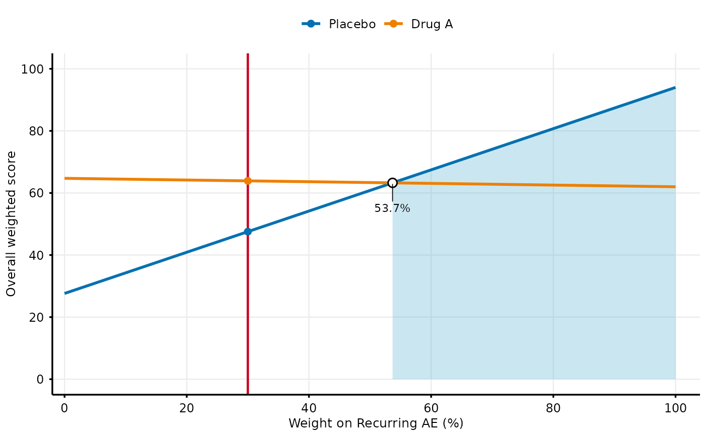
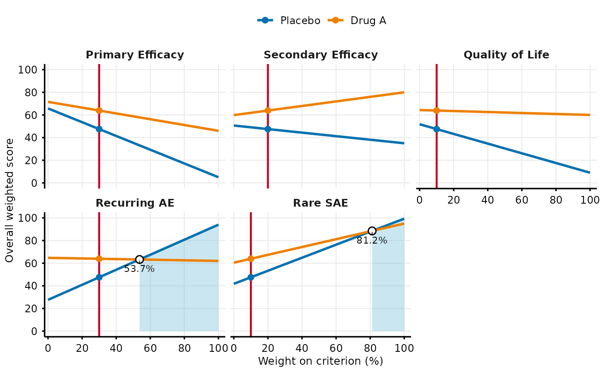

Create MCDA Weight Sensitivity Plot
mcda_weight_sensitivity.RdOne-way sensitivity analysis on criterion weights, in the style of
Figures 6 and 7 of Angelis and Phillips (2021). The weight on a single
criterion is varied from 0% to 100% while the remaining weights are
rescaled proportionally so that all weights still sum to 1. Because the
MCDA model is linear additive, each treatment's overall weighted score is
a straight line in the weight: at 0% it equals the score obtained from
the other criteria alone, and at 100% it equals the treatment's
preference value on the varied criterion. A vertical line marks the
current weight and points mark where the preferred treatment changes.
Shading under the highest line highlights weight ranges according to
shading. By default it marks the weights at which a different
treatment would be preferred than at the current weight, so the unshaded
band around the vertical line shows how far the weight can move before
the decision changes.
Usage
mcda_weight_sensitivity(
data,
weights,
clinical_scales,
comparator_name = NULL,
criteria = NULL,
fig_colors = NULL,
ref_line_color = "#ca0020",
show_crossovers = TRUE,
shading = c("change", "hiview", "none"),
shade_color = "#4EADD0",
base_font_size = 9
)Arguments
- data
A data frame in wide format with Treatment column and criteria columns. Required parameter - must be provided. Each row should contain raw values for a treatment on their original measurement scales. Other columns are ignored, except Study when
comparator_nameis given. Treatment names must be unique (excluding comparator rows). Seemcda_datafor example format.- weights
Named numeric vector of criterion weights. Must sum to 1.
- clinical_scales
List defining clinical reference levels for each criterion. Each element should be a list with: min (lower threshold), max (upper threshold), direction ("increasing" for higher is better, "decreasing" for lower is better).
- comparator_name
Character string naming the comparator treatment (e.g., "Placebo"). If NULL (default), each treatment's overall weighted score is plotted. If given, each other treatment is plotted as its score minus the score of the comparator row in the same Study (or the single comparator row when
datahas no Study column), and the comparator itself is not drawn.- criteria
Character vector of criteria whose weight is varied. One panel is drawn per criterion. If NULL (default), all criteria in
weightsare shown.- fig_colors
A vector of colors for the treatment lines, recycled if shorter than the number of treatments. If NULL, a default palette is used.
- ref_line_color
Color of the vertical line marking the current weight. Default is "#ca0020".
- show_crossovers
Logical; if TRUE (default), mark and label the weights at which the treatment with the highest overall score changes.
- shading
Character string selecting how weight ranges are shaded. The ranges are the bands between crossovers, each with one preferred treatment.
"change"(default): shade the bands in which a different treatment is preferred than at the current weight."hiview": shade the first band and every other band after it, as in the Hiview software used for Figures 6 and 7 of Angelis and Phillips (2021). Nothing is shaded when the preferred treatment never changes."none": no shading.
- shade_color
Fill color for the shading. Default is "#4EADD0".
- base_font_size
Numeric; base font size in points for all text elements in the plot (default: 9).
Value
A ggplot object showing overall weighted score (or the
difference from the comparator) against the weight on each selected
criterion, with one line per treatment.
The underlying lines, crossover points and preferred-treatment
regions are attached as the attributes "sensitivity_lines",
"crossovers" and "preferred_regions".
Details
With comparator_name, each treatment is instead scored by its
difference from the comparator in the same study (as in
create_mcda_waterfall and mcda_tornado).
The differences are also linear in the weight, so lines, crossovers and
shading work in the same way.
References
Angelis A, Phillips LD. Advancing structured decision-making in drug regulation at the FDA and EMA. Br J Clin Pharmacol. 2021;87(2):395-405. doi:10.1111/bcp.14425
Examples
# Load example MCDA data
data(mcda_data)
# Define clinical scales
clinical_scales <- list(
`Primary Efficacy` = list(min = 0, max = 1, direction = "increasing"),
`Secondary Efficacy` = list(min = 0, max = 100, direction = "decreasing"),
`Quality of Life` = list(min = 0, max = 100, direction = "increasing"),
`Recurring AE` = list(min = 0, max = 0.5, direction = "decreasing"),
`Rare SAE` = list(min = 0, max = 0.3, direction = "decreasing")
)
# Define weights
weights <- c(
`Primary Efficacy` = 0.30,
`Secondary Efficacy` = 0.20,
`Quality of Life` = 0.10,
`Recurring AE` = 0.30,
`Rare SAE` = 0.10
)
# Vary the weight on a single criterion
mcda_weight_sensitivity(
data = mcda_data |> dplyr::filter(Study == "Study 1"),
weights = weights,
clinical_scales = clinical_scales,
criteria = "Recurring AE"
)

# One panel per criterion
mcda_weight_sensitivity(
data = mcda_data |> dplyr::filter(Study == "Study 1"),
weights = weights,
clinical_scales = clinical_scales
)
